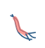
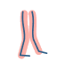
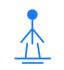
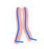

Área Motora

Extremidades superiores
- Hemiparesia
- Dinamometría
- Pinzometría
- Tono muscular
- Función manual

Extremidades inferiores
- Tono muscular
- Evaluación de la fuerza
- Transiciones
- Transferencias

Equilibrio
- Control de tronco
- Equilibrio estático
- Equilibrio dinámico

Marcha
- Componentes
- Tipos de marcha
- Giros
Sin resultados